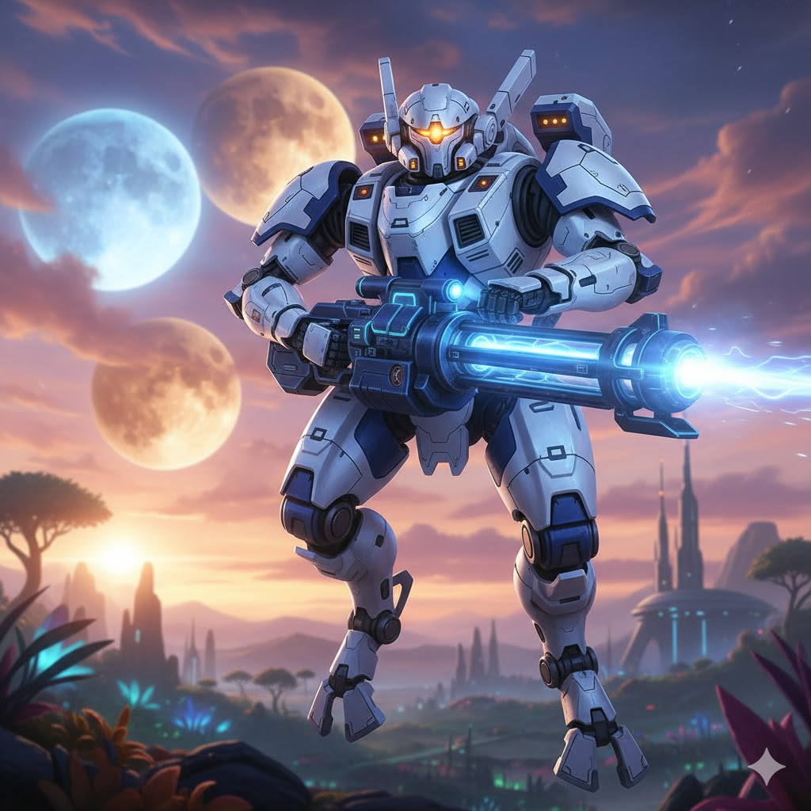

T'au

A Filosofia do Bem Maior
Os T'au buscam expandir seu império com diplomacia, tecnologia avançada e a crença do “Bem Maior” — ideal que une diferentes espécies sob uma mesma sociedade.

Tecnologia e Guerra
Drones, armaduras de batalha e armas de energia são marcas dos T'au. Possuem uma das forças militares mais inovadoras do universo Warhammer 40K.
Curiosidades
- O império T'au é formado por várias castas: Fogo, Terra, Ar, Água e Éter.
- Os T'au aceitam outras raças, como Gue'vesa (humanos) e Kroot, em suas fileiras.
- Valorizam estratégia, cooperação e soluções racionais para conflitos.